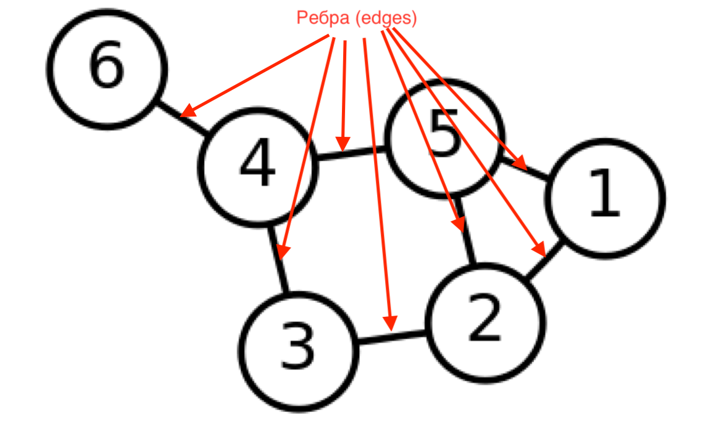

Сетевой анализ — 2
Инструменты
Сеть (граф)

состоит из узлов...

...и ребер
CSV — cамый простой формат кодирования сетей
- Source,Target,Weight
- Даня,Маша,2
- Вася,Петя,15
- Вася,Маша,1
Как можно делать такие CSV?
- В блокноте...
- В любом табличном редакторе (LibreOffice/OpenOffice/Excel)
- Из питона. Например: github.com/DanilSko/lyc_compling/blob/master/Networks_24052018/Text2NetworkSample_Lyceum2405.ipynb
- Ручками в нашем Ezlinavis
Но в Ezlinavis нет возможностей анализа
Gephi (gephi.org)
- Простой инструмент для анализа сетей (не надо уметь программировать)
- "like Photoshop but for graph data" (gephi.org)
- Открытый и бесплатный
- Написан на Java и работает на всех основных ОС
- Расширяемый (можно создавать плагины)
- …немного глючный : )
Импорт CSV
Динам.граф